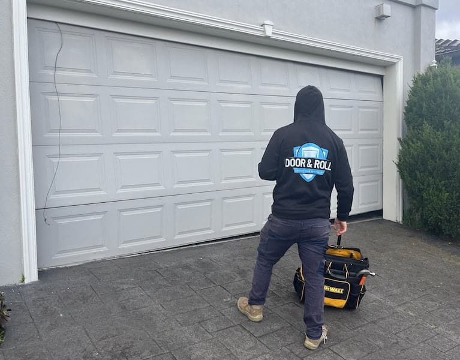

Garage Door Repairs in Melbourne, Brisbane, and Gold Coast
Get expert help at the best price for garage door repairs in all areas of Melbourne, Brisbane, and Gold Coast within 30 mins. Call Us Now or Schedule a Service!
Why Choose Door & Roll for Garage Door Repairs?
When it comes to garage door repairs, you don’t want to mess around with DIY fixes or unreliable handymen. After all, your garage door is like the unsung hero of your home—it works hard, opens and closes countless times, and keeps your car, tools, and random storage items safe. But when it starts acting up, it’s time to call in the experts. That’s where Door & Roll comes in! Offering top-notch garage door repair services in Melbourne, Brisbane, and Gold Coast, they’re the go-to team for fast, affordable, and reliable solutions. Whether your garage door is stuck, squeaking, or just plain stubborn, they’ve got you covered.
In this article, we’ll dive into why Door & Roll is the best choice for garage door repairs, what makes their services stand out, and how they can save you time, money, and a whole lot of frustration. So, grab a cup of coffee, sit back, and let’s talk about garage doors (yes, they’re more exciting than you think!).
1. Fast and Reliable Service
Let’s face it—when your garage door isn’t working, it’s a major inconvenience. Maybe you’re running late for work, or perhaps you’ve got a delivery truck waiting outside. Whatever the case, you need help fast. Door & Roll understands this and promises to be at your doorstep within 30 minutes in Melbourne, Brisbane, and Gold Coast. That’s faster than it takes to binge-watch an episode of your favorite show!
2. Expert Technicians You Can Trust
Not all heroes wear capes—some come with toolkits and a knack for fixing garage doors. Door & Roll employs only the best technicians in the business. These guys aren’t just handy with tools; they’re certified professionals who know garage doors inside and out.
3. Affordable Pricing, No Hidden Costs
Let’s be real—garage door repairs can be expensive, but they don’t have to be. Door & Roll believes in fair and transparent pricing. They offer competitive rates without compromising on quality. When you get a quote from them, you can rest assured that there won’t be any surprise charges later.
4. Comprehensive Services for All Garage Door Issues
Garage doors are complex systems with many moving parts. When something goes wrong, it’s not always easy to pinpoint the problem. Thankfully, Door & Roll offers a wide range of services to address every possible issue, including:
- Spring Repairs and Replacements
- Track Alignment
- Opener Repairs
- Cable Replacements
- General Maintenance
5. Customer-Centric Approach
At Door & Roll, the customer always comes first. They understand that every home and garage door is unique, which is why they tailor their services to meet your specific needs.
6. Serving Melbourne, Brisbane, and Gold Coast
No matter where you are in Melbourne, Brisbane, or Gold Coast, Door & Roll has you covered. They’re proud to serve homeowners and businesses across these areas, providing the same high-quality service no matter the location.
7. Emergency Repairs Available
Garage door problems don’t always happen at convenient times. That’s why Door & Roll offers emergency repair services. If your garage door breaks down in the middle of the night or on a weekend, don’t panic—just give them a call.
8. High-Quality Parts and Materials
When it comes to garage door repairs, the quality of the parts used matters. Door & Roll uses only the best materials and components to ensure long-lasting results.
9. Peace of Mind Guaranteed
There’s nothing worse than spending money on a repair only to have the problem come back a few weeks later. With Door & Roll, you don’t have to worry about that. They stand by their work and offer a satisfaction guarantee.
Why Regular Garage Door Maintenance Matters
While Door & Roll is always ready to handle repairs, it’s worth mentioning that regular maintenance can prevent many common garage door issues. Here are a few reasons why you should consider scheduling routine maintenance:
- Extend the Life of Your Garage Door
- Save Money
- Ensure Safety
- Improve Performance